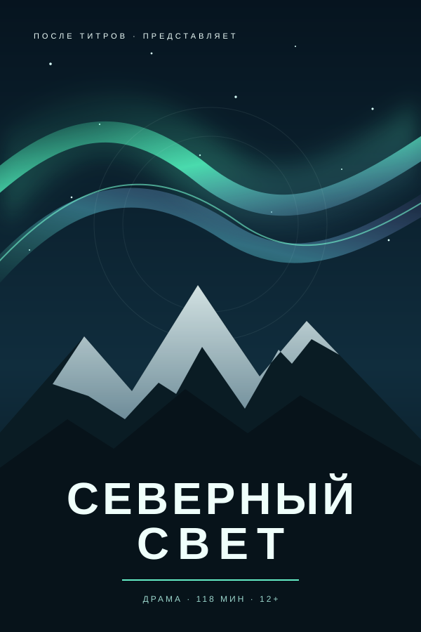
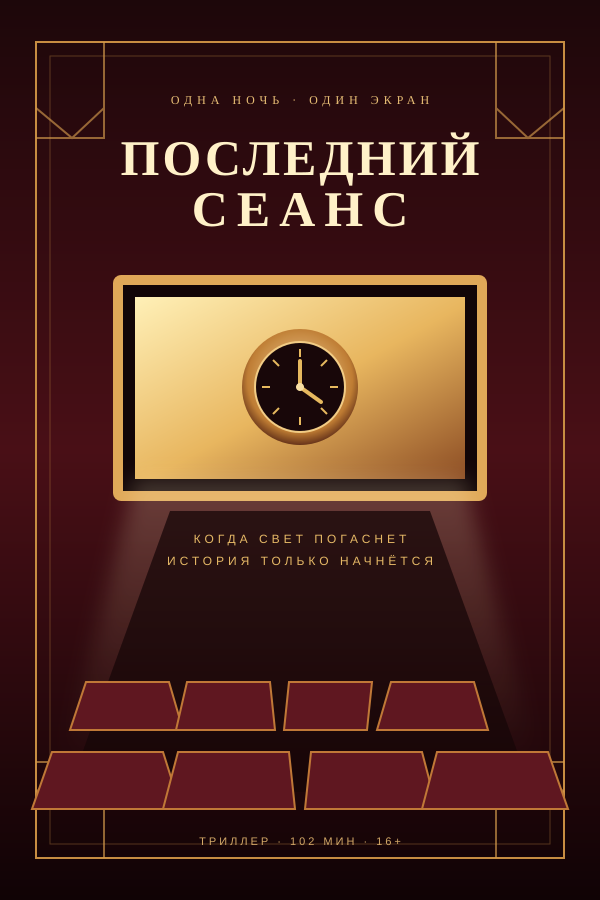
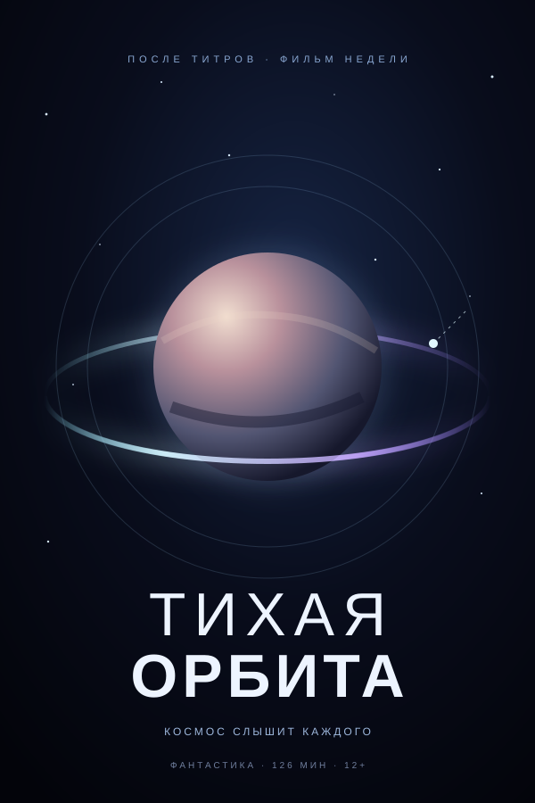
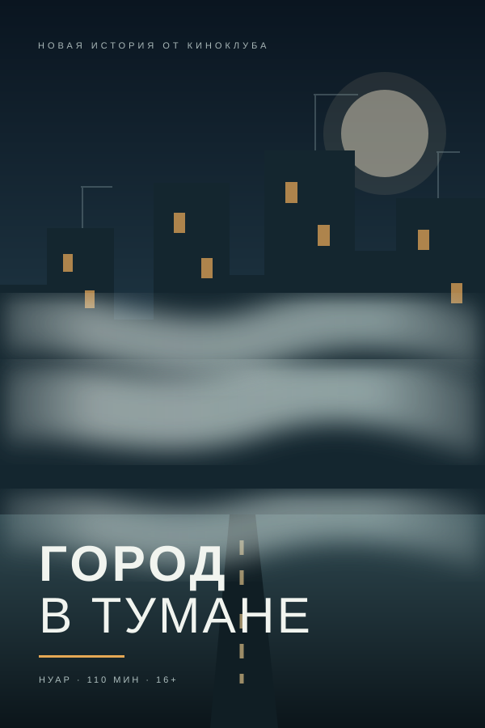
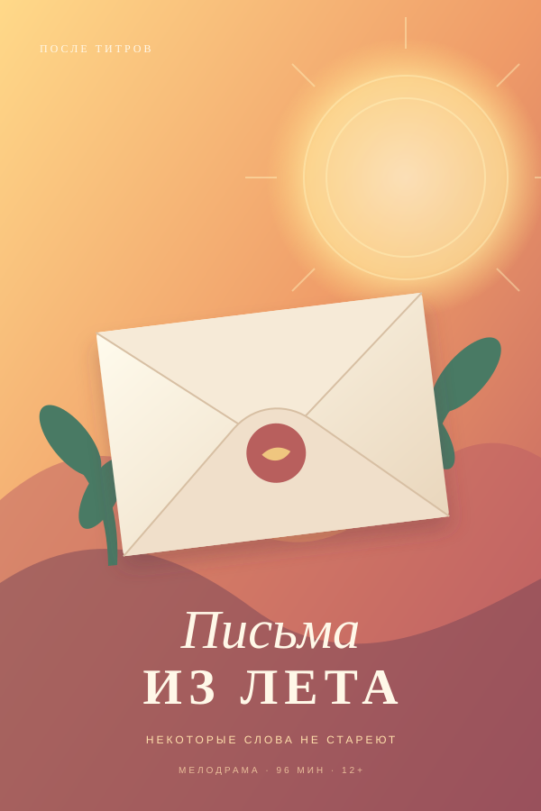
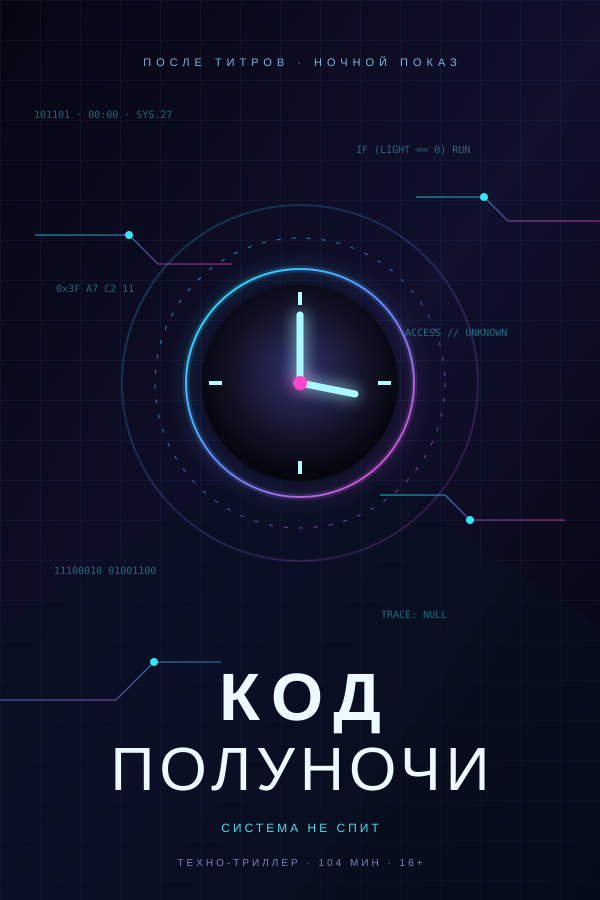

Северный свет
Фотограф возвращается в родной город и находит в старой мастерской чужие снимки. Она решает повторить маршрут неизвестного автора.
Каталог без спойлеров
Здесь собраны драмы, фантастика и детективы. Используйте фильтр, чтобы оставить только нужный жанр.
Названия, описания и афиши придуманы для учебного сайта.

Фотограф возвращается в родной город и находит в старой мастерской чужие снимки. Она решает повторить маршрут неизвестного автора.

Старый кинотеатр закрывается, но киномеханик проводит последний показ. На плёнке зрители узнают знакомые места.

Дежурная на метеостанции получает сигнал с потерянного спутника. В сообщении звучит её собственный голос из завтрашнего дня.

Радиоведущая слышит в ночном эфире координаты. Наутро в этих местах появляются бумажные журавли.

Друзья находят письма, которые написали себе десять лет назад, и сравнивают детские планы с тем, как сложилась их жизнь.

Городские экраны показывают код с событиями следующего дня. Программист пытается предотвратить ошибку, которую код предсказал ему.
Есть идея?